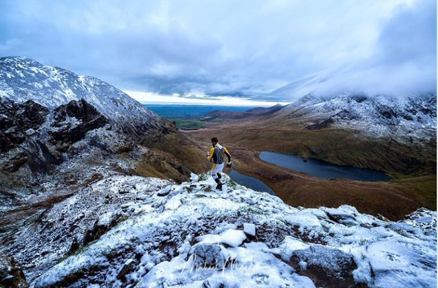
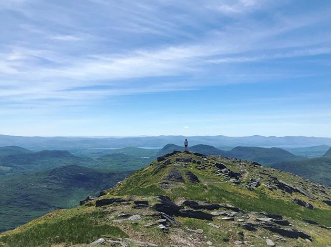
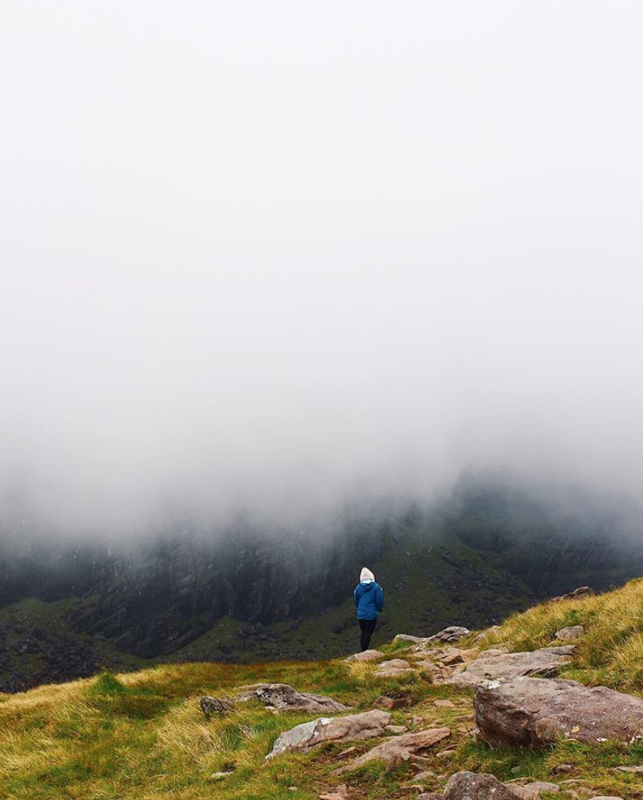
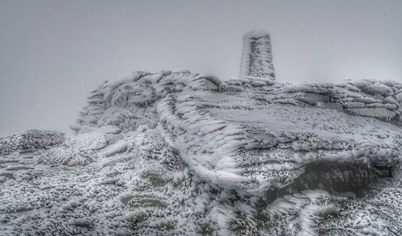
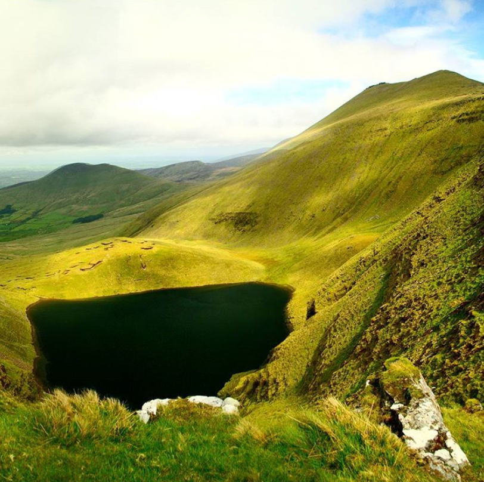

5 of the Highest Mountains to Climb in Ireland
1. Carrauntoohil
Location: Co Kerry
Height: 1,038 m
Everyone knows Carrauntoohil, as it is the highest peak on the island, standing proud at 1,038 metres high. It is the central peak of the impressive Macgillycuddy’s Reeks range. A range which is littered with some of the highest peaks in the country including Beenkeragh at 1,010 m and Caher to the west at 1,001 m. The views from Carrauntoohil are something special to behold, overlooking three bowl-shaped valleys, each with its own lakes. At the top sits a steel cross to greet you when you summit.
Check out our full guide on everything you need to know to climb Carrauntoohil.
2. Cnoc na Péiste
Location: Co Kerry
Height: 988m
Kerry is where Ireland’s mountains reach their pinnacle. If you are a hiker visiting this country that’s where you need to head. Cnoc na Péiste or Knocknapeasta is a 988 m peak that is also part of the Macgillycuddy’s Reeks range and it is the fourth highest summit in Ireland.
3. Mount Brandon
Location: Co Kerry
Height: 952m
Brandon Mountain or Mount Brandon is again in the Kingdom of Kerry. A 952 m mountain in the Dingle Peninsula. It is the highest peak in Ireland outside of the Macgillycuddy’s Reeks. The route is a part of the Christian pilgrimage trail known as Cosán na Naomh.
4. Lugnaquilla
Location: Co Wicklow
Height: 952m
The first on our list outside of Kerry is Wicklows Lug, a 925 m peak. The mountain is the highest peak in the Wicklow Mountains range and the highest in Ireland outside of Co Kerry. It is an unusual mountain as its summit plateaus making it difficult to navigate in poor weather. There are no marked routes on the mountain and it will talk you a god 5-8hrs to do the whole thing, covering between 10 – 16km. But the views are something else, if you get a good day you will catch sight of Snowdonia in Wales.
Check out our full guide on Lugnaquilla here.
5. Galtymore
Location: Co Limerick & Co Tipperary
Height: 919m
Galtymore is a 919 m mountain that sits on the border between Limerick and Tipperary. It is the highest of the Galty Mountains and the tallest inland mountain in Ireland. There is plenty to explore in this range, with three glacial lakes; Borheen Lough, Lough Dineen and Lough Curra and stunning evidence of the Ice Age to feast your eyes upon.
Check out our full guide on the Galtees here.